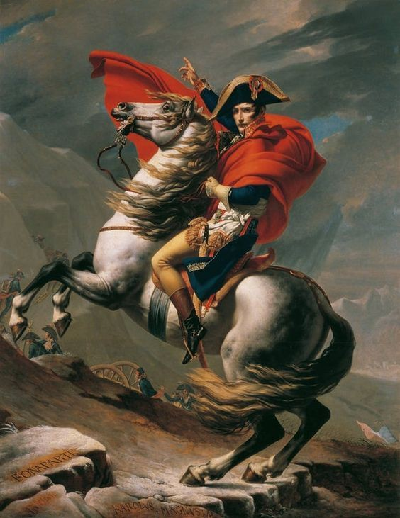

April 20, 1792: France declares war on Austria The revolutionaries sought (looked for) to spread revolutionary ideas and faced opposition (resistance) from monarchies (kingdoms) in Europe.
August 10, 1792: Storming of the Tuileries The monarchy was effectively overthrown (removed from power), leading to the suspension (temporary halt) of Louis XVI.
September 2-7, 1792: September Massacres Fears of counter-revolution (opposition to the revolution) led to the execution (killing) of prisoners in Paris.
